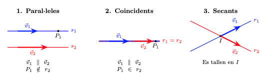

Posició relativa de dues rectes al pla
Un cop hem estudiat el paral·lelisme i la perpendicularitat, podem analitzar més generalment com podem trobar dues rectes, \(r\) i \(s\), al pla.
Els tres casos possibles
Al pla, dues rectes només es poden trobar en una d'aquestes tres situacions:
- Rectes paral·leles: Les rectes no es tallen mai (no tenen punts en comú).
- Rectes coincidents: Són la mateixa recta (tenen tots els punts en comú).
- Rectes secants: Les rectes es tallen en un únic punt (la perpendicularitat és un cas particular de dues rectes secants).
Vegem gràficament aquestes tres possibilitats de posició relativa entre dues rectes:

Estudi segons el vector director
Si disposem dels vectors directors de les dues rectes, \(\vec{d}_r\) i \(\vec{d}_s\), l'anàlisi per determinar la posició relativa de les dues rectes segueix aquest ordre lògic:
-
Pas 1: Comprovar la direcció. Mirem si els vectors directors són proporcionals \((\vec{d}_r = k \cdot \vec{d}_s)\).
- Si no són proporcionals: Les rectes són secants i es tallen en un únic punt. Aquest punt ha de ser solució de les dues equacions de les rectes.
- Si són proporcionals: Pot passar que siguin paral·leles o coincidents i per determinar-ho, passem al segon pas.
-
Pas 2: Comprovar un punt. Agafem un punt qualsevol de la primera recta (\(P_r \in r\)) i mirem si pertany a la segona (\(s\)):
- Si \(P_r \notin s\): Les rectes són paral·leles.
- Si \(P_r \in s\): Les rectes són coincidents.
Estudi segons l'Equació General
Aquest mètode és el més ràpid si tenim les rectes expressades en forma general:
Simplement hem de comparar les raons dels seus coeficients:
- Rectes secants Els coeficients de \(x\) i \(y\) no mantenen la mateixa proporció. Això indica diferent direcció o pendent de cada recta:
- Rectes paral·leles Els coeficients de \(x\) i \(y\) són proporcionals, però el terme independent no ho és:
- Rectes coincidents Tots els coeficients mantenen la mateixa proporció (una equació és múltiple de l'altra):
Estudi de posicions relatives
Donada la recta \(r: 2x - 4y + 6 = 0\), determina la posició relativa respecte a les següents rectes:
Recta \(\mathbf{s: 3x - 6y + 9 = 0}\)
- Comparem les raons:
- Conclusió: Com que \(\displaystyle\frac{2}{3} = \frac{2}{3} = \frac{2}{3}\), totes les raons són iguals. Les rectes són COINCIDENTS.
Recta \(\mathbf{t: x - 2y + 5 = 0}\)
- Comparem les raons:
- Conclusió: Com que \(\displaystyle\frac{A}{A'} = \frac{B}{B'} \neq \frac{C}{C'}\), tenen la mateixa direcció però diferent ordenada a l'origen. Les rectes són PARAL·LELES.
Recta \(\mathbf{u: 3x + y - 2 = 0}\)
- Comparem les raons:
- Conclusió: Com que \(\frac{2}{3} \neq -4\), la proporció dels coeficients directors ja és diferent. No cal ni mirar el terme \(C\). Les rectes són SECANTS.
Taula resum de les raons
| Comparació | Tipus de sistema | Posició Relativa |
|---|---|---|
| \(\frac{A}{A'} \neq \frac{B}{B'}\) | Sistema Compatible Determinat | Secants (1 punt de tall) |
| \(\frac{A}{A'} = \frac{B}{B'} \neq \frac{C}{C'}\) | Sistema Incompatible | Paral·leles (0 punts comuns) |
| \(\frac{A}{A'} = \frac{B}{B'} = \frac{C}{C'}\) | Sistema Compatible Indeterminat | Coincidents (infinits punts, són la mateixa recta) |
Càlcul del punt de tall entre rectes secants
Quan hem determinat que dues rectes són secants (\(\frac{A}{A'} \neq \frac{B}{B'}\)), sabem que es tallen en un únic punt \(I(x_0, y_0)\). Aquest punt és la solució del sistema d'equacions format per les dues rectes.
O sigui, per trobar el punt de tall, hem de resoldre el sistema:
Podem utilitzar qualsevol dels mètodes habituals (substitució, igualació o reducció).
Exemple
Troba el punt de tall entre les rectes secants:
\(r: 2x - 3y + 5 = 0\)
\(s: x + 2y - 8 = 0\)
Mètode de reducció
Volem eliminar una de les incògnites. Multipliquem la segona equació (\(s\)) per \(-2\) per eliminar la \(x\):
- Mantenim \(r\): \(2x - 3y = -5\)
- Multipliquem \(s\) per \(-2\): \(-2x - 4y = -16\)
- Sumem les dues equacions:
- Substituïm \(y=3\) a la recta \(s\):
- Punt de tall: \(I(2, 3)\)
Mètode de substitució Aquest mètode és útil si una de les incògnites és fàcil d'aïllar (com la \(x\) a la recta \(s\)):
- Aïllem \(x\) de la recta \(s\):
- Substituïm aquesta expressió a la recta \(r\):
- Trobem la \(x\):
- Punt de tall: \(I(2, 3)\)